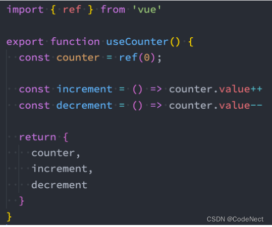

一、Composition API（一）
1. 认识组合 API
- ==Composition API==：组件根据逻辑功能来组织的，一个功能所定义的所有 API 会放在一起（更加的高内聚，低耦合）
- ==Options API==：在对应的属性中编写对应的功能模块, 比如data定义数据、methods中定义方法、computed中定义计算属性、watch中监听属性改变，也包括生命周期钩子
- 弊端: 当我们实现某一个功能时，这个功能对应的代码逻辑会被拆分到各个属性中。当组件变得复杂，对应属性的列表也会增长，这可能会导致组件难以阅读和理解
- ==两者区别==：
- 在逻辑组织和逻辑复用方面，Composition API是优于Options API
- 因为Composition API几乎是函数，会有更好的类型推断。
- Composition API对 tree-shaking 友好，代码也更容易压缩
- Composition API中见不到this的使用，减少了this指向不明的情况
- 在逻辑组织和逻辑复用方面，Composition API是优于Options API
2. setup 函数
setup 函数可以替代之前所编写的大部分其他选项：比如methods、computed、watch、data、生命周期等等
2.1 setup 函数的参数
- setup函数的参数：
props：父组件传递过来的属性会被放到props对象中，我们在setup中如果需要使用，那么就可以直接 通过props参数获取- 对于定义props的类型，我们还是和之前的规则是一样的，在props选项中定义
- 在template中依然是可以正常去使用props中的属性，比如message
- 如果我们在setup函数中想要使用props，那么不可以通过 this 去获取
- 因为props有直接作为参数传递到setup函数中，所以我们可以直接通过参数来使用即可
context：里面包含三个属性- attrs：所有的非prop的attribute
- slots：父组件传递过来的插槽（这个在以渲染函数返回时会有作用，后面会讲到）
- emit：当我们组件内部需要发出事件时会用到emit（因为我们不能访问this，所以不可以通过 this.$emit发出事件）
2.2 setup 函数的返回值
setup的返回值可以在模板template中被使用
- 可以通过setup的返回值来替代data选项
- 可以返回一个执行函数来代替在methods中定义的方法
注意： - 对于定义的变量，默认情况下，Vue并不会跟踪它的变化，来引起界面的响应式操作
2.3 setup 不可以使用 this
在setup被调用之前，data、computed、methods等都没有被解析，this并没有指向当前组件实例
3. setup 中数据的响应式
3.1 reactive 定义响应式数据
使用reactive的函数，可以使setup中定义的数据（多为复杂类型）提供响应式的特性。
- 这是因为当我们使用reactive函数处理我们的数据之后，数据再次被使用时就会进行依赖收集
- 当数据发生改变时，所有收集到的依赖都是进行对应的响应式操作（比如更新界面）
- 事实上，我们编写的data选项，也是在内部交给了reactive函数将其编程响应式对象的
reactive API对传入的类型是有限制的，它要求我们必须传入的是一个对象或者数组类型
3.1.1 reactive 判断的 API
3.1.2 toRefs
对reactive返回的对象进行解构获取值，那么之后无论是修改结构后的变量，还是修改reactive 返回的state对象，数据都不再是响应式的：
- 使用toRefs的函数，可以将reactive返回的对象中的属性都转成ref
<template>
<div>
<h2>info: {{ name }} - {{ age }} - {{ height }}</h2>
<button @click="age++">修改age</button>
<button @click="height = 1.89">修改height</button>
</div>
</template>
<script>
import { reactive, toRefs, toRef } from 'vue'
export default {
setup() {
const info = reactive({
name: "why",
age: 18,
height: 1.88
})
// reactive被解构后会变成普通的值, 失去响应式，需要使用toRef(s)
const { name, age } = toRefs(info)
const height = toRef(info, "height")
return {
name,
age,
height
}
}
}
</script>3.2 ref 定义响应式数据
ref 会返回一个可变的响应式对象，该对象作为一个响应式的引用维护着它内部的值，这就是ref名称的来源
注意：
- 在模板中引入ref的值时，Vue会自动进行解包（浅层解包）操作，所以我们并不需要在模板中通过 ref.value 的方式来使用
- 如果将ref放到一个reactive的属性当中，那么在模板中使用时，它会自动解包
- 但是在 setup 函数内部，它依然是一个 ref引用， 所以对其进行操作时，我们依然需要使用 ref.value的方式
3.2.1 ref 判断的 API
<template>
<div>
<h2>message: {{ message }}</h2>
<button @click="changeMessage">修改message</button>
<hr>
<h2>账号: {{ account.username }}</h2>
<h2>密码: {{ account.password }}</h2>
<button @click="changeAccount">修改账号</button>
<hr>
<!-- 默认情况下在template中使用ref时, vue会自动对其进行解包(取出其中value) -->
<h2>当前计数: {{ counter }}</h2>
<button @click="increment">+1</button>
<button @click="counter++">+1</button>
<hr>
<!-- 使用的时候需要写.value -->
<h2>当前计数: {{ info.counter.value }}</h2>
<!-- 修改的时候不需要写.value -->
<h2>当前计数: {{ info1.counter }}</h2>
</div>
</template>
<script>
import { reactive, ref } from 'vue'
export default {
setup() {
// 1.定义普通的数据: 可以正常的被使用
// 缺点: 数据不是响应式的
let message = "Hello World"
function changeMessage() {
message = "你好啊,李银河!" // 页面上的 message 不会更改
console.log(message)
}
// 2.定义响应式数据
// 2.1.reactive函数: 定义复杂类型的数据
const account = reactive({
username: "coderwhy",
password: "123456"
})
function changeAccount() {
account.username = "kobe"
}
// 2.2.ref函数: 定义简单类型的数据(也可以定义复杂类型的数据)
// counter定义响应式数据
const counter = ref(0)
function increment() {
counter.value++
}
// 3.ref是浅层解包
const info = {
counter
}
const info1 = reactive({
counter
})
return {
message,
changeMessage,
account,
changeAccount,
counter,
increment,
info
}
}
}
</script>3.3 开发中选择 reactive/ref
<template>
<div>
<form>
账号: <input type="text" v-model="account.username">
密码: <input type="password" v-model="account.password">
</form>
<show-info :name="name" :age="age"></show-info>
</div>
</template>
<script>
import { onMounted, reactive, ref } from 'vue'
import ShowInfo from './ShowInfo.vue'
export default {
components: {
ShowInfo
},
data() {
return {
message: "Hello World"
}
},
setup() {
// 定义响应式数据: reactive/ref
// 强调: ref也可以定义复杂的数据
const info = ref({})
console.log(info.value)
// 1.reactive的应用场景
// 1.1.条件一: reactive应用于本地的数据
// 1.2.条件二: 多个数据之间是有关系/联系(聚合的数据, 组织在一起会有特定的作用)
const account = reactive({
username: "coderwhy",
password: "1234567"
})
// 2.ref的应用场景: 其他的场景基本都用ref(computed)
// 2.1.定义本地的一些简单数据
const name = ref("why")
const age = ref(18)
// 2.定义从网络中获取的数据也是使用ref
// const musics = reactive([])
const musics = ref([])
onMounted(() => {
const serverMusics = ["海阔天空", "小苹果", "野狼"]
musics.value = serverMusics
})
return {
account,
name,
age
}
}
}
</script>3.4 readonly 的使用
3.4.1 单项数据流
我们传入给其他地方（组件）的这个响应式对象希望在另外一个地方（组件）被使用，但是不能被修改
3.4.2 readonly
常见的readonly方法会传入三个类型的参数：
- 类型一：普通对象
- 类型二：reactive返回的对象
- 类型三：ref的对象
规则：
- readonly返回的对象都是不允许修改的
- 但是经过readonly处理的原来的对象允许修改
// App.vue
<template>
<h2>App: {{ info }}</h2>
<show-info
:roInfo="roInfo"
@changeRoInfoName="changeRoInfoName">
</show-info>
</template>
<script>
import { reactive, readonly } from 'vue'
import ShowInfo from './ShowInfo.vue'
export default {
components: {
ShowInfo
},
setup() {
// 本地定义多个数据, 都需要传递给子组件
// name/age/height
const info = reactive({
name: "why",
age: 18,
height: 1.88
})
// 使用readOnly包裹info
const roInfo = readonly(info)
function changeRoInfoName(payload) {
info.name = payload
}
return {
roInfo,
changeRoInfoName
}
}
}
</script>// ShowInfo.vue
<template>
<div>
<!-- 想修改info中内容的正确做法: 符合单项数据流-->
<!-- 使用readonly的数据 -->
<h2>ShowInfo: {{ roInfo }}</h2>
<!-- 代码就会无效(报警告) -->
<!-- <button @click="roInfo.name = 'james'">ShowInfo按钮</button> -->
<button @click="roInfoBtnClick">roInfo按钮</button>
</div>
</template>
<script>
export default {
props: {
// reactive数据
info: {
type: Object,
default: () => ({})
},
// readonly数据
roInfo: {
type: Object,
default: () => ({})
}
},
emits: ["changeRoInfoName"],
setup(props, context) {
function roInfoBtnClick() {
context.emit("changeRoInfoName", "james")
}
return {
roInfoBtnClick
}
}
}
</script>二、Composition API（二）
1. computed 函数使用（重要）
可以在 setup 函数中使用 computed 方法来编写一个计算属性：
- 接收一个getter函数，返回一个不变的 ref 对象
- 接收一个具有 get 和 set 的对象，返回一个可变的（可读写）ref 对象
<template>
<h2>{{ fullname }}</h2>
<button @click="setFullname">设置fullname</button>
<h2>{{ scoreLevel }}</h2>
</template>
<script>
import { reactive, computed, ref } from "vue";
export default {
// 原Options API写法
// computed: {
// fullname() {
// return this.firstName + this.lastName;
// },
// },
setup() {
// 1.定义fullname
const names = reactive({
firstName: "kobe",
lastName: "bryant",
});
// 方法一
// const fullname = computed(() => {
// return names.firstName + " " + names.lastName
// })
// 方法二
const fullname = computed({
set: function (newValue) {
const tempNames = newValue.split(" ");
names.firstName = tempNames[0];
names.lastName = tempNames[1];
},
get: function () {
return names.firstName + " " + names.lastName;
},
});
function setFullname() {
fullname.value = "coder why";
console.log(names);
} // 此时可以更改数据
// 2.定义score
const score = ref(89);
const scoreLevel = computed(() => {
return score.value >= 60 ? "及格" : "不及格"});
return {
names,
fullname,
setFullname,
scoreLevel,
};
},
};
</script>2. ref 获取元素/组件（半重要）
定义一个ref对象，绑定到元素或者组件的ref属性上即可
<template>
<!-- 1.获取元素 -->
<h2 ref="titleRef">我是标题</h2>
<button ref="btnRef">按钮</button>
<!-- 2.获取组件实例 -->
<show-info ref="showInfoRef"></show-info>
</template>
<script>
import { ref, onMounted } from 'vue'
import ShowInfo from './ShowInfo.vue'
export default {
components: {
ShowInfo
},
setup() {
const titleRef = ref()
const btnRef = ref()
const showInfoRef = ref()
// mounted的生命周期函数
onMounted(() => {
console.log(titleRef.value)
console.log(btnRef.value)
console.log(showInfoRef.value)
// 取ShowInfo.vue中的函数
showInfoRef.value.showInfoFoo()
})
return {
titleRef,
btnRef,
showInfoRef
}
}
}
</script>3. 生命周期注册函数（重要）
使用直接导入的 onX 函数注册生命周期钩子，beforeCreate、created不再需要了
<template>
<div>AppContent</div>
</template>
<script>
import { onMounted, onUpdated, onUnmounted } from 'vue'
export default {
// beforeCreate() {
// },
// created() {
// },
// beforeMount() {
// },
// mounted() {
// },
// beforeUpdate() {
// },
// updated() {
// }
setup() {
// 在执行setup函数的过程中, 你需要注册别的生命周期函数
onMounted(() => {
console.log("onmounted")
})
}
}
</script>4. provide/inject 函数
通过 provide 方法来定义每个 Property，可以传入两个参数：
- name：提供的属性名称
- value：提供的属性值
通过 inject 来注入需要的属性和对应的值，可以传入两个参数：
- 要 inject 的 property 的 name
- 默认值
// App.vue
<template>
<div>AppContent: {{ name }}</div>
<button @click="name = 'kobe'">app btn</button>
<show-info></show-info>
</template>
<script>
import { provide, ref } from 'vue'
import ShowInfo from './ShowInfo.vue'
export default {
components: {
ShowInfo
},
setup() {
const name = ref("why")
provide("name", name)
provide("age", 18)
return {
name
}
}
}
</script>// ShowInfo.vue
<template>
<div>ShowInfo: {{ name }}-{{ age }}-{{ height }} </div>
</template>
<script>
import { inject } from 'vue'
export default {
// inject的options api注入, 那么依然需要手动来解包
// inject: ["name", "age"],
setup() {
const name = inject("name")
const age = inject("age")
const height = inject("height", 1.88)
return {
name,
age,
height
}
}
}
</script>5. watch/watchEffect（半重要）
可以通过watch选项来侦听data或者props的数据变化，当数据变化时执行某一些操作
- watchEffect：用于自动收集响应式数据的依赖
- watch：需要手动指定侦听的数据源
- 区别：
- watch监听到改变, 可以拿到改变前后value
- watchEffect默认直接执行一次, watch在不设置immediate第一次是不执行
5.1 watch 的使用
- watch需要侦听特定的数据源，并且执行其回调函数
- 默认情况下它是惰性的，只有当被侦听的源发生变化时才会执行回调
- 侦听器还可以使用数组同时侦听多个源
- 可以设置选项：deep、immediate
<template>
<div>AppContent</div>
<button @click="message = '你好啊,李银河!'">修改message</button>
<button @click="info.friend.name = 'james'">修改info</button>
</template>
<script>
import { reactive, ref, watch } from 'vue'
export default {
setup() {
// 1.定义数据
const message = ref("Hello World")
const message2 = ref("Hello World2")
const info = reactive({
name: "why",
age: 18,
friend: {
name: "kobe"
}
})
// 2.侦听数据的变化
watch(message, (newValue, oldValue) => {
console.log(newValue, oldValue)
})
watch(info, (newValue, oldValue) => {
console.log(newValue, oldValue)
console.log(newValue === oldValue)
}, {
immediate: true
})
// 3.监听reactive数据变化后, 获取普通对象
watch(() => ({ ...info }), (newValue, oldValue) => {
console.log(newValue, oldValue)
}, {
immediate: true,
deep: true
})
// 侦听多个数据源
watch([message, message2], (newValue, oldValue) => {
console.log(newValue, oldValue)
})
return {
message,
message2,
info
}
}
}
</script>5.2 watchEffect 的使用
- 首先，watchEffect传入的函数会被立即执行一次，并且在执行的过程中会收集依赖
- 其次，只有收集的依赖发生变化时，watchEffect传入的函数才会再次执行
- 希望停止侦听，获取watchEffect的返回值函数，调用该函数即可
<template>
<div>
<h2>当前计数: {{ counter }}</h2>
<button @click="counter++">+1</button>
<button @click="name = 'kobe'">修改name</button>
</div>
</template>
<script>
import { watchEffect, watch, ref } from 'vue'
export default {
setup() {
const counter = ref(0)
const name = ref("why")
// watch(counter, (newValue, oldValue) => {})
// 1.watchEffect传入的函数默认会直接被执行
// 2.在执行的过程中, 会自动的收集依赖(依赖哪些响应式的数据)
const stopWatch = watchEffect(() => {
console.log("-------", counter.value, name.value)
// 判断counter.value > 10，停止侦听
if (counter.value >= 10) {
stopWatch()
}
})
return {
counter,
name
}
}
}
</script>6. 自定义 Hook 的练习(思想)
6.1 useCounter
对counter逻辑进行抽取：

6.2 useTitle
修改title的Hook：
6.3 useScrollPosition
监听界面滚动位置的Hook：

7. setup 语法糖（重要）
- 当使用
<script setup>的时候，任何在<script setup>声明的顶层的绑定 (包括变量，函数声明，以及 import 引入的内容) 都能在模板template中直接使用 - import 导入的组件可以直接使用，不需要引入
- 在声明 props 和 emits 选项时获得完整的类型推断支持，可以使用
defineProps和defineEmitsAPI - 通过模板 ref 或者 $parent 链获取到的组件的公开实例，不会暴露在任何
<script setup>中。通过defineExpose解决
// App.vue
<template>
<div>AppContent: {{ message }}</div>
<button @click="changeMessage">修改message</button>
<show-info name="why"
:age="18"
@info-btn-click="infoBtnClick"
ref="showInfoRef">
</show-info>
</template>
<script setup>
// 1.所有编写在顶层中的代码, 都是默认暴露给template可以使用
import { ref, onMounted } from 'vue'
import ShowInfo from './ShowInfo.vue'
// 2.定义响应式数据
const message = ref("Hello World")
console.log(message.value)
// 3.定义绑定的函数
function changeMessage() {
message.value = "你好啊, 李银河!"
}
function infoBtnClick(payload) {
console.log("监听到showInfo内部的点击:", payload)
}
// 4.获取组件实例
const showInfoRef = ref()
onMounted(() => {
showInfoRef.value.foo()
})
</script>// ShowInfo.vue
<template>
<div>ShowInfo: {{ name }}-{{ age }}</div>
<button @click="showInfoBtnClick">showInfoButton</button>
</template>
<script setup>
// 定义props
const props = defineProps({
name: {
type: String,
default: "默认值"
},
age: {
type: Number,
default: 0
}
})
// 绑定函数, 并且发出事件
const emits = defineEmits(["infoBtnClick"])
function showInfoBtnClick() {
emits("infoBtnClick", "showInfo内部发生了点击")
}
// 定义foo的函数
function foo() {
console.log("foo function")
}
// 函数可公开
defineExpose({
foo
})
</script>